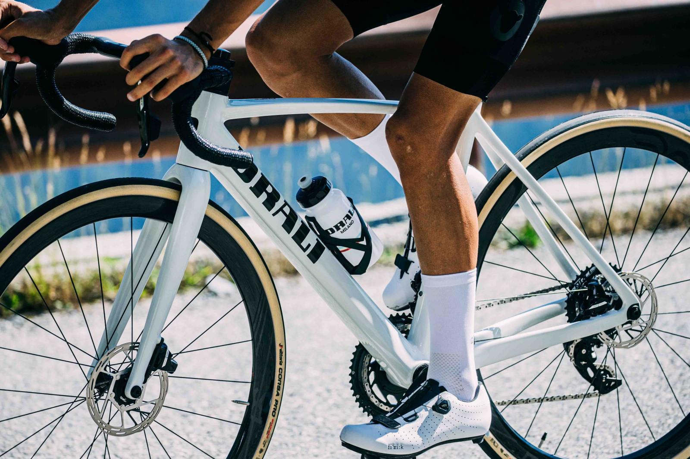

Les marques
Nous avons volontairement sélectionné ces marques pour l'exclusivité qu'elles représentent.
Milan · depuis 1925
Une maison milanaise aujourd'hui tournée vers le carbone. Drali signe des vélos de route et de gravel à la fois élégants et performants. Sur certains modèles, la géométrie et la couleur peuvent être personnalisées.
Découvrir la marque → Site de la marque ↗Piémont · depuis 2021
Une marque italienne intimiste qui bouscule les codes du haut de gamme. Leur règle est simple : il n'y en a pas ! Montage à la carte, peinture 100 % personnalisable et positionnement tarifaire incomparable.
Découvrir la marque → Site de la marque ↗Italie
Le rapport équipement / prix ultime. Grâce à une maîtrise totale de sa production, Gusto bouscule les géants du cycle, avec des cadres monocoque en fibre Toray 1000.
Découvrir la marque → Site de la marque ↗Cuneo · depuis 2013
Au pied du Mont Viso, Officine Mattio incarne le Made in Italy : tous ses cadres carbone sont fabriqués et assemblés en Italie, avec la technologie « tube à tube » et une peinture personnalisable.
Découvrir la marque → Site de la marque ↗Sur rendez-vous, nous vous présentons chaque marque et vous aidons à choisir.
Prendre rendez-vous